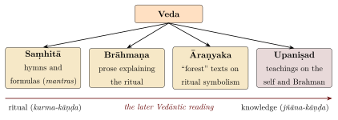
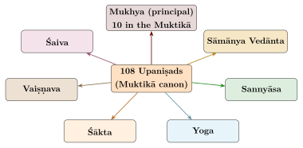
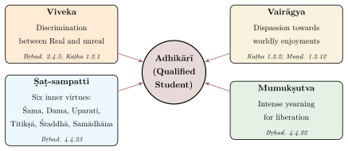

Chapter 1: Introduction — What are the Upaniṣads?¶
1.1 The Word Upaniṣad: Etymology and Meaning¶
How the word Upaniṣad was understood tells us a good deal about how the texts were used. Sanskrit etymologies, traditional and modern, answer different questions, and both kinds are worth knowing.
upa-ni-ṣad
upa = near, ni = down (with devotion), ṣad = to sit
Literal meaning: “To sit down near” (the teacher for receiving esoteric instruction)
The root ṣad (to sit) with the prefixes upa (near) and ni (down) yields the familiar modern gloss: sitting down near the teacher to receive secret instruction. This derivation, popularised by nineteenth-century Indologists such as Max Müller and Deussen, evokes the guru-śiṣya paramparā — the disciple approaching the teacher with humility to receive teaching through personal transmission.
Historical philology suggests a different picture. In the Brāhmaṇas and the oldest Upaniṣads the word upaniṣad often means a hidden “connection” or “equivalence” between ritual, cosmic and bodily realities, and hence the secret teaching that discloses such connections; this is the sense emphasised by Louis Renou and by Patrick Olivelle in the introduction to his translation (Olivelle 1998). The traditional commentators, for their part, did not favour “sitting near”. Śaṅkara, introducing his commentaries on the Kaṭha and Taittirīya, derives the word from the root sad (listed by the grammarians as ṣad) in its three senses of “loosening/destroying” (viśaraṇa), “going/reaching” (gati) and “wearing down” (avasādana). Two lines of explanation follow from these. On the first, the root means “to destroy” or “to loosen”, and the Upaniṣad is the knowledge that destroys ignorance (avidyā) and the bondage of saṃsāra. On the second, the root means “to reach”, and the Upaniṣad is the knowledge that leads the seeker to Brahman.
1.2 The Upaniṣads within the Vedic Corpus¶
The place of the Upaniṣads in Vedic literature is usually explained through the traditional fourfold division of each Veda. Each of the four Vedas — Ṛgveda, Yajurveda, Sāmaveda, and Atharvaveda — is traditionally divided into four kinds of text, which later tradition also matched with stages of life (Figure 1.1).

In the later Vedāntic reading, the progression from Saṃhitā to Upaniṣad mirrors a movement from the external world of ritual and action (karma-kāṇḍa) to the interior world of knowledge and liberation (jñāna-kāṇḍa). The fourfold scheme is, however, an idealisation. The boundaries between the genres are fluid: the Bṛhadāraṇyaka is the final part of the Śatapatha Brāhmaṇa and is itself called an Āraṇyaka; the Aitareya and Kauṣītaki Upaniṣads are sections of Āraṇyakas; and the Chāndogya forms the later part of a Brāhmaṇa of the Sāmaveda. Much of the content of the oldest Upaniṣads is itself ritual speculation, as Section 4.3 shows. The correlation with the four life-stages (āśramas) given in Table 1.1 is a traditional schematisation, not a description of how the texts were actually used.
| Section | Content | Purpose | Life Stage |
|---|---|---|---|
| Saṃhitā | Mantras, Hymns | Praise and invocation of deities | Brahmacarya |
| Brāhmaṇa | Ritualistic prose | Explanation of sacrificial rites | Gṛhastha |
| Āraṇyaka | Mystical texts | Symbolic, internalised rituals | Vānaprastha |
| Upaniṣad | Philosophical | Knowledge of Brahman and liberation | Sannyāsa |
1.3 The Upaniṣads as Vedānta¶
The Upaniṣads are also called Vedānta (Veda + anta), the “end of the Veda”. The word has three senses. It names their textual position, since they come at the end of the Vedic texts of their schools. In the Vedāntic schools it also names their standing as the culmination of the Veda, the part that the earlier ritual portions are held to serve. And it names the goal (anta) of the Veda, the knowledge of Brahman (brahma-vidyā). The second and third senses are claims of the later tradition; the first is a description that every reader can check. The Gītā states the theistic form of the third sense:
vedaiś ca sarvair aham eva vedyaḥ
Translation: “By all the Vedas, it is I alone who am to be known.”
— Bhagavad Gītā 15.15
From the early centuries CE the Upaniṣads were systematised in the Brahmasūtra and read together with it and the Gītā as the “triple foundation” (prasthānatraya) of the Vedānta schools; both developments are described in Chapter 11.
1.4 How Many Upaniṣads Exist?¶
The Muktikā Upaniṣad — a late text, probably of the medieval period, that gives a canonical list — enumerates 108 Upaniṣads, distributed by Veda as follows: 10 of the Ṛgveda, 19 of the Śukla Yajurveda, 32 of the Kṛṣṇa Yajurveda, 16 of the Sāmaveda and 31 of the Atharvaveda. The number 108 is a conventional sacred number; it is not a historical count. The actual number of texts bearing the title “Upaniṣad” is considerably larger: catalogues list more than two hundred, many of them late compositions, and some (such as the Allopaniṣad) composed as late as the Mughal period.
Modern scholars group the 108 Muktikā Upaniṣads by theme into principal (mukhya), general Vedāntic (sāmānya-vedānta), renunciation (sannyāsa), yoga, Śaiva, Vaiṣṇava and Śākta texts. The exact allocation of individual texts to these groups differs between editions, so Figure 1.2 gives the categories without fixed counts except for the ten principal Upaniṣads named in the Muktikā itself. The principal Upaniṣads are read in Chapters 2–4, the Yoga, Sannyāsa and sectarian groups in Chapters 7–9, and the general Vedāntic group in Section 9.7.

1.5 The Vedic Affiliation of Major Upaniṣads¶
Each Upaniṣad is traditionally affiliated with one of the four Vedas. This affiliation is significant because it determines the paramparā (lineage of transmission) through which the teaching was preserved and also influences the recitation style and ritual context of the text (Table 1.2).
| Veda | Branch (Śākhā) | Upaniṣad(s) |
|---|---|---|
| Ṛgveda | Śākala (Aitareya Āraṇyaka) | Aitareya |
| Ṛgveda | Bāṣkala / Śāṅkhāyana (Kauṣītaki Āraṇyaka) | Kauṣītaki |
| Śukla Yajurveda | Vājasaneyi (Kāṇva and Mādhyandina) | Bṛhadāraṇyaka, Īśā |
| Kṛṣṇa Yajurveda | Taittirīya | Taittirīya |
| Kṛṣṇa Yajurveda | Uncertain (named after the teacher Śvetāśvatara; often grouped with the Taittirīya by tradition) | Śvetāśvatara |
| Kṛṣṇa Yajurveda | Kaṭha (Kaṭhaka) | Kaṭha |
| Kṛṣṇa Yajurveda | Maitrāyaṇīya | Maitrī (Maitrāyaṇīya) |
| Sāmaveda | Jaiminīya (Talavakāra) | Kena |
| Sāmaveda | Kauthuma–Rāṇāyanīya | Chāndogya |
| Atharvaveda | Śaunaka (by tradition) | Muṇḍaka, Māṇḍūkya |
| Atharvaveda | Pippalāda | Praśna |
1.6 The Mukhya (Principal) Upaniṣads¶
Among the 108 Upaniṣads, a smaller group has long been treated as pre-eminent. These are the mukhya (principal) Upaniṣads — those upon which the great Ācāryas, beginning with Śaṅkara, wrote their commentaries (bhāṣyas). The standard list comprises ten Upaniṣads, those on which commentaries generally accepted as Śaṅkara’s survive. Many lists add the Śvetāśvatara (a commentary on it is ascribed to Śaṅkara, but its authenticity is doubted), giving eleven. Robert Ernest Hume’s influential Thirteen Principal Upaniṣads (Hume 1921) adds the Kauṣītaki and the Maitrī to these eleven, giving thirteen (Table 1.3).
| No. | Upaniṣad | Veda | Central Theme |
|---|---|---|---|
| 1 | Īśā | Śukla Yajurveda | The Lord pervading all; renunciation with enjoyment |
| 2 | Kena | Sāmaveda | The power behind the senses; Brahman as the Unknown |
| 3 | Kaṭha | Kṛṣṇa Yajurveda | Death and immortality; the Ātman beyond death |
| 4 | Praśna | Atharvaveda | Six questions on cosmology, Prāṇa, and meditation |
| 5 | Muṇḍaka | Atharvaveda | Higher and lower knowledge; Brahman as target |
| 6 | Māṇḍūkya | Atharvaveda | Oṃ and the four states of consciousness |
| 7 | Taittirīya | Kṛṣṇa Yajurveda | Five sheaths (kośas); Brahman as bliss |
| 8 | Aitareya | Ṛgveda | Creation; the Self as consciousness |
| 9 | Chāndogya | Sāmaveda | Tat tvam asi; Sad-vidyā; diverse meditations |
| 10 | Bṛhadāraṇyaka | Śukla Yajurveda | The most extensive; Aham Brahmāsmi; Yājñavalkya’s teachings |
The ten are listed in a verse of the Muktikā Upaniṣad (1.30), widely used as a mnemonic:
īśa-kena-kaṭha-praśna-muṇḍa-māṇḍūkya-tittiriḥ
aitareyaṃ ca chāndogyaṃ bṛhadāraṇyakaṃ tathā
Translation: “Īśā, Kena, Kaṭha, Praśna, Muṇḍaka, Māṇḍūkya, Taittirīya, Aitareya, Chāndogya and likewise the Bṛhadāraṇyaka.”
1.7 The Form and Style of the Upaniṣads¶
The Upaniṣads use many literary forms, and they lack the systematic arrangement of the later sūtra literature. The most characteristic form is the dialogue, between teacher and pupil or between rival sages: the Kaṭha is framed as a conversation between the boy Naciketas and Yama, the god of death, and the Praśna as six questions put by six seekers to the sage Pippalāda. The Chāndogya teaches through illustrative stories and analogies, as in Uddālaka Āruṇi’s instruction of his son Śvetaketu. The Īśā opens with a series of compressed verses whose sense the commentators still dispute. The Māṇḍūkya, the shortest of the principal Upaniṣads at twelve short prose sections, sets out a schematic analysis of the states of consciousness. The Śvetāśvatara is devotional verse addressed to a personal God. Chapter 2 begins the reading of these texts one by one.
1.8 The Central Concerns of the Upaniṣads¶
Later Vedānta found six questions running through the Upaniṣads. What is the ultimate nature of reality (the doctrine of Brahman)? What is the self (the doctrine of Ātman)? How are the two related (the subject of the mahāvākyas)? Why does the self appear to be bound (in Advaita, the doctrine of māyā and avidyā)? How can it be freed (mokṣa)? And what is the self’s condition beyond waking, dream and sleep (the “fourth”, turīya)? The texts do not ask these questions in this order, and they give more than one answer to each. The questions nevertheless give a useful map of the doctrinal chapters of this book: the great sayings in Chapter 5, the doctrines of Brahman, Ātman, māyā, karma and liberation in Chapter 6, and the states of consciousness in Chapter 10.
1.9 The Oral Tradition and Textual Transmission¶
The Upaniṣads, like all Vedic literature, were originally transmitted orally. The guru-śiṣya paramparā (teacher-student lineage) carried these teachings across many centuries before they were committed to writing. The Upaniṣadic teaching was considered secret and was imparted only to students judged fit to receive it (adhikārīs); the qualifications later demanded of such a student are discussed in Section 1.15.
The preservation of the Vedic corpus by oral means is one of the best-documented achievements of cultural memory. The Vedic schools developed several redundant methods of recitation designed to ensure textual fidelity; the most elaborate of these “modified” recitations (vikṛti-pāṭha) were applied chiefly to the Saṃhitās, while the Upaniṣads were usually learned in continuous recitation (Table 1.4).
| Recitation Method | Sanskrit Name | Description |
|---|---|---|
| Continuous recitation | Saṃhitā-pāṭha | Words recited in their natural, continuous form with sandhi rules applied |
| Separated recitation | Pada-pāṭha | Each word separated and pronounced individually, revealing the base forms |
| Paired recitation | Krama-pāṭha | Words recited in overlapping pairs: 1-2, 2-3, 3-4, etc. |
| Woven recitation | Jaṭā-pāṭha | Words interwoven: 1-2, 2-1, 1-2; 2-3, 3-2, 2-3; etc. |
| Dense recitation | Ghana-pāṭha | The most complex pattern, combining forward and reverse sequences of three words |
The śākhā (branch or recension) system meant that each Vedic school maintained its own version of its texts. This produced multiple independent lines of transmission, but also genuine textual variation: the Bṛhadāraṇyaka, for example, survives in a Kāṇva and a Mādhyandina recension that differ in wording and in the order of some passages, and Śaṅkara commented on the Kāṇva text. Variant readings are therefore a normal subject of Upaniṣadic philology, even though the core texts are stable.
1.10 The Śānti Mantras: Invocatory Prayers of the Upaniṣads¶
Each Upaniṣad traditionally begins with a Śānti Mantra — a peace invocation — that is chanted by both teacher and student before the commencement of study. The mantras are shared by the Upaniṣads of each Veda (Table 1.5). In the traditional explanation they invoke peace from the three sources of disturbance: ādhibhautika (from external beings), ādhidaivika (from supernatural forces), and ādhyātmika (from within oneself) — hence the threefold repetition of Oṃ Śāntiḥ.
| Śānti Mantra (Opening Words) | Veda | Associated Upaniṣads |
|---|---|---|
| āpyāyantu mamāṅgāni… | Sāmaveda | Kena, Chāndogya |
| bhadraṃ karṇebhiḥ śṛṇuyāma devāḥ… | Atharvaveda | Muṇḍaka, Māṇḍūkya, Praśna |
| vāṅ me manasi pratiṣṭhitā… | Ṛgveda | Aitareya |
| saha nāvavatu… | Kṛṣṇa Yajurveda | Kaṭha, Taittirīya, Śvetāśvatara |
| pūrṇamadaḥ pūrṇam idaṃ… | Śukla Yajurveda | Īśā, Bṛhadāraṇyaka |
The best known of these is the Pūrṇamadaḥ mantra of the Śukla Yajurveda:
oṃ pūrṇam adaḥ pūrṇam idaṃ
pūrṇāt pūrṇam udacyate
pūrṇasya pūrṇam ādāya
pūrṇam evāvaśiṣyate
Translation: “That (Brahman) is full; this (world) is full. From fullness, fullness arises. When fullness is taken from fullness, fullness alone remains.”
— Bṛhadāraṇyaka 5.1.1 (Śānti Mantra of the Īśā and Bṛhadāraṇyaka)
This mantra states, in four lines, the Upaniṣadic idea of the plenitude of Brahman: Brahman is not diminished by the world that comes forth from it. Modern readers often compare this to the arithmetic of infinity, in which subtracting from an infinite quantity leaves it infinite; the comparison is a helpful modern analogy, not a claim about what the composers knew of mathematics.
1.11 The Dating and Historical Context of the Upaniṣads¶
The chronological dating of the Upaniṣads is one of the most debated issues in Indological scholarship. The Upaniṣads do not bear dates, and the oral tradition through which they were transmitted for centuries makes external dating exceptionally difficult. Nevertheless, scholars have employed a variety of methods — linguistic analysis, cross-references with datable historical events, comparison with Buddhist and Jaina texts, and internal evidence — to arrive at approximate chronological ranges (Table 1.6).
| Period | Approximate Date | Upaniṣads |
|---|---|---|
| Oldest prose (pre-Buddhist) | c. 7th–6th c. BCE | Bṛhadāraṇyaka, Chāndogya |
| Early prose | c. 6th–5th c. BCE | Taittirīya, Aitareya, Kauṣītaki |
| Verse Upaniṣads | last centuries BCE | Kena, Kaṭha, Īśā, Śvetāśvatara, Muṇḍaka |
| Later prose | c. turn of the Common Era | Praśna, Māṇḍūkya; Maitrī (possibly later) |
| Minor and sectarian | early centuries CE to c. 1700 CE | Sannyāsa, Yoga, Śaiva, Vaiṣṇava and Śākta Upaniṣads (most medieval or later; see Chapters 7–9) |
The Bṛhadāraṇyaka and Chāndogya, generally acknowledged as the oldest, display linguistic features characteristic of late Vedic prose and contain references to social and political institutions that align with the pre-Buddhist period. The Kaṭha and Muṇḍaka, by contrast, exhibit a more polished metrical style and a greater degree of philosophical systematisation, suggesting a somewhat later date. The Māṇḍūkya, with its terse, aphoristic prose and highly abstract analysis of consciousness, is generally assigned to the latest stratum of the principal Upaniṣads.
Scholarly Note
The dates given above are approximate and follow the relative chronology set out by Patrick Olivelle (Olivelle 1998); absolute dates for this period are uncertain by a century or more. The Indian tradition itself does not regard the Upaniṣads as historical products of particular eras but as apauṛuṣeya — not of human authorship — and therefore timeless (anādi). This theological claim need not conflict with historical scholarship; it points to the tradition’s conviction that the truths revealed in the Upaniṣads are eternal, even if the verbal formulations through which they were expressed occurred at particular historical moments.
1.12 The Relative Chronology of the Principal Upaniṣads¶
Table 1.6 is best read as a sequence rather than as a set of dates. No principal Upaniṣad names a datable king, mentions a datable event or survives in an early dated manuscript. The absolute dates are obtained by fitting the whole sequence between the later Vedic ritual literature, which comes before it, and the early Buddhist and grammatical literature, which knows something of the same world. The order within the sequence is the more secure part of the scholarship. It rests on several independent kinds of evidence, and its strength lies in the fact that they agree.
1.12.1 From Deussen’s Four Groups to Olivelle’s Ordering¶
The modern ordering goes back to Paul Deussen (Deussen 1897, 1906), who sorted the older Upaniṣads into four groups. The first was the ancient prose Upaniṣads (Bṛhadāraṇyaka, Chāndogya, Taittirīya, Aitareya, Kauṣītaki and Kena). The second was the verse Upaniṣads (Kaṭha, Īśā, Śvetāśvatara, Muṇḍaka and the Mahānārāyaṇa). The third was the later prose Upaniṣads (Praśna, Maitrī and Māṇḍūkya). The fourth was the large body of Atharvavedic Upaniṣads. Deussen’s main criterion was form: prose of the Brāhmaṇa type first, then verse close to the epic, then a new, more technical prose.
Patrick Olivelle keeps the outline of this scheme but refines it in four ways (Olivelle 1998):
-
He separates the Bṛhadāraṇyaka and Chāndogya, the two oldest, from a slightly later prose layer formed by the Taittirīya, Aitareya and Kauṣītaki.
-
He moves the Kena, whose first two sections are in verse and whose last two are in prose, to the head of the verse group as its oldest member, followed probably by the Kaṭha, Īśā, Śvetāśvatara and Muṇḍaka.
-
He leaves the Maitrī and the Mahānārāyaṇa out of his collection of the early Upaniṣads altogether.
-
He attaches cautious absolute dates: the seventh to sixth centuries BCE, with a margin of a century or so either way, for the two oldest texts, which he regards as pre-Buddhist; the sixth to fifth centuries for the next prose layer; the last few centuries BCE for the verse Upaniṣads; and about the turn of the Common Era for the Praśna and Māṇḍūkya.
Olivelle stresses that the absolute dates are tentative. Signe Cohen’s study of the older Upaniṣads re-examines the sequence text by text, using among other things the way each text presents the authority of its own teaching (Cohen 2008). The relative order, however, has proved stable, because each of the following lines of evidence points the same way.
1.12.2 Position in the Vedic Corpus¶
The oldest prose Upaniṣads are not free-standing books. Each is the final part of a larger text belonging to a particular Vedic school, and each continues that text’s style of argument by correspondences (Section 1.1):
-
The Bṛhadāraṇyaka closes the Śatapatha Brāhmaṇa of the White Yajurveda.
-
The Chāndogya forms the last eight of the ten chapters of the Chāndogya Brāhmaṇa of the Sāmaveda.
-
The Aitareya is a section of the Aitareya Āraṇyaka (2.4–6).
-
The Taittirīya forms books 7–9 of the Taittirīya Āraṇyaka.
-
The Kauṣītaki forms chapters 3–6 of the Śāṅkhāyana Āraṇyaka (Section 4.7.1).
-
The Kena is a short section of the Jaiminīya Upaniṣad Brāhmaṇa.
Texts embedded in this way were composed and handed down by the schools whose ritual corpus they complete. They stand at the end of a long development of Brāhmaṇa prose, which is why their language and their habits of thought are continuous with it.
The verse Upaniṣads, by contrast, are independent compositions. They are attached to a school either by name, as the Kaṭha is to the Kaṭha branch of the Black Yajurveda, or only by later convention, as the Muṇḍaka, Praśna and Māṇḍūkya are to the Atharvaveda, a Veda that had no older Upaniṣad of its own. The Īśā is a special case. It is the fortieth chapter of the Vājasaneyī Saṃhitā (Section 2.1), but its verse form and its synthesis of knowledge and action place it with the verse Upaniṣads. Its position at the end of a Saṃhitā shows how the Vājasaneyins arranged their canon; it does not make the Īśā as old as the hymns before it.
The Kaṭha shows the same relation from the inside. Its frame story of Naciketas and Death is already told in the Taittirīya Brāhmaṇa (3.11.8), where the boy’s boons concern the building of the Naciketa fire-altar. The Upaniṣad keeps the fire as its second boon (Kaṭha 1.1.19) and turns the third into the question whether a man exists after death (1.1.20). This is a philosophical reworking of an older ritual narrative, and it is one of the clearest signs that the Kaṭha comes later than the Brāhmaṇa literature.
1.12.3 Language, Form and Shared Verses¶
The linguistic evidence is set out in the next section (Section 1.13). The prose of the Bṛhadāraṇyaka and Chāndogya is late Vedic. The verse of the Kaṭha and Śvetāśvatara is close to the language of the epic, and two verses of the Kaṭha (1.2.18–19) recur with small changes in the Bhagavadgītā (2.19–20). The prose Upaniṣads already quote verses as known material. The Bṛhadāraṇyaka introduces 4.4.7 with “on this there is the following verse”, and the same verse stands in the Kaṭha (2.3.14).
The verse Upaniṣads draw on a common stock (Table 1.7). The direction of borrowing cannot always be decided. The overlap nevertheless shows that the verse Upaniṣads belong close together in time and milieu. The Śvetāśvatara, which shares verses with the Kaṭha, the Muṇḍaka, the Ṛgveda and the Vājasaneyī Saṃhitā, has the character of a compilation standing late in the group.
1.12.4 Doctrine, Milieu and the Buddhist Horizon¶
The verse and later prose Upaniṣads use a technical vocabulary that the oldest texts lack:
-
The Kaṭha arranges the senses, their objects, the mind, the intellect, the “great self”, the unmanifest and the Person in an ascending hierarchy (1.3.10–11), close to the later Sāṅkhya list, and it defines yoga as the steady holding of the senses (2.3.11).
-
The Śvetāśvatara names “Sāṅkhya and Yoga” as the means of knowing the first cause (6.13), and it worships the one God as Rudra.
-
The Muṇḍaka calls the sacrifices “unsteady boats” (1.2.7) and ranks all Vedic learning as the lower knowledge (Section 3.1).
-
The Māṇḍūkya reduces the analysis of waking, dream and sleep to a fixed scheme of four quarters.
Systematisation of this kind presupposes the looser explorations of the older prose.
The absolute dates hang on the relation to Buddhism. If the Buddha lived about 480–400 BCE (the short chronology adopted in this series), then the Bṛhadāraṇyaka and Chāndogya, which show no awareness of Buddhists or Jainas, are most naturally placed earlier. The Pali canon, for its part, knows the Vedic schools by name. The Tevijja Sutta (Dīgha Nikāya 13) lists Adhvaryu, Taittirīya, Chandoga and Bahvṛca brahmins, each claiming a path to union with Brahmā. The canon also discusses positions that resemble Upaniṣadic teachings (Section 6.10).
Geography points the same way. The older Upaniṣads move between the Kuru-Pañcāla country and the eastern kingdoms of Kāśī and Videha (Section 4.5), not yet the Magadhan world of the Buddhist texts. Michael Witzel’s study of the Vedic schools traces this eastward movement of Vedic culture and of its centres of patronage (Witzel 1997).
The consensus has been challenged. Johannes Bronkhorst has argued that karma and rebirth entered Brahmanical thought from the culture of “Greater Magadha” further east. On his view, the passages of the oldest Upaniṣads that teach these doctrines need not be older than the Buddha (Bronkhorst 2007, 2011).
Dating is complicated further by the fact that the oldest Upaniṣads are composite. The Bṛhadāraṇyaka’s three sections each end in a list of teachers (vaṃśa, 2.6, 4.6 and 6.5), which suggests that they were once transmitted separately. The Maitreyī dialogue appears in it twice (2.4 and 4.5), and the Chāndogya moves from opening chapters devoted largely to the chants of the Sāmaveda (1–2) to the sustained philosophical teaching of its last three (6–8). To date such a text is to date its final redaction; a particular passage may be older or younger than the whole. The defensible conclusion is therefore modest but firm. The order Bṛhadāraṇyaka and Chāndogya; then Taittirīya, Aitareya and Kauṣītaki; then the verse Upaniṣads; then the Praśna and Māṇḍūkya is secure in outline. The century attached to each stage is an informed estimate.
1.13 The Language and Linguistic Character of the Upaniṣads¶
The Upaniṣads occupy a distinctive position in the history of the Sanskrit language. They span a period of linguistic evolution from late Vedic Sanskrit (in the Bṛhadāraṇyaka and Chāndogya) through a transitional phase to a form approaching classical Sanskrit (in the Kaṭha and Śvetāśvatara). This linguistic diversity is itself evidence of the long period over which the Upaniṣadic corpus developed (Table 1.8).
| Feature | Early Upaniṣads (Bṛhad., Chānd.) | Later Upaniṣads (Kaṭha, Śvet.) |
|---|---|---|
| Grammar | Vedic forms; subjunctive mood; older verbal endings | Closer to Pāṇinian classical norms |
| Vocabulary | Archaic Vedic terms; ritualistic vocabulary | More philosophical technical terms |
| Style | Long prose passages; embedded dialogues | Polished metrical verse; compact expression |
| Sentence structure | Paratactic; loose coordination | More hypotactic; subordinate clauses |
| Metre | Prose dominant; occasional anuṣṭubh verses | Triṣṭubh, anuṣṭubh, jagatī metres |
The older prose Upaniṣads, particularly the Bṛhadāraṇyaka, preserve archaic grammatical forms that have largely disappeared in later Sanskrit. These include the subjunctive mood (leṭ-lakāra), the injunctive, and certain pronominal forms no longer current in classical Sanskrit. The later verse Upaniṣads, by contrast, employ the metrical patterns and polished diction of early classical Sanskrit poetry. The Kaṭha’s verse on the Self “subtler than the subtle, greater than the great” (aṇor aṇīyān mahato mahīyān, 1.2.20, quoted in full in Section 2.3) is a typical example: its triṣṭubh metre, with eleven syllables to the line, gives the teaching a measured, solemn cadence.
1.14 The Upaniṣads and the Śramaṇa Traditions¶
The relationship between the Upaniṣads and the Śramaṇa traditions — particularly Buddhism and Jainism — has been much discussed. The Śramaṇa movements arose in the same intellectual world that produced the middle and late Upaniṣads, and the traditions overlap at several points (Table 1.9).
The doctrines of karma (action and its consequences), saṃsāra (the cycle of rebirth) and liberation (mokṣa, nirvāṇa) appear in both the Upaniṣads and the Śramaṇa traditions. Which side gave them to the other is debated (Section 1.12); it is likely that they developed in a shared milieu (Samuel 2008; Bronkhorst 2007). The divergences are as important. The Upaniṣads affirm a permanent, unchanging self (ātman), which early Buddhism denies (anātman). Jainism affirms a self (jīva), but conceives it as one of countless individual souls, not as a self identical with all. These disagreements generated a debate that lasted more than a thousand years; the Buddhist critique and the Jain alternative are examined in Section 6.10. Both the Upaniṣadic teachers and the Śramaṇas also moved away from the sacrificial religion of the Brāhmaṇas towards an interiorised discipline: the Kaṭha’s choice between the “good” (śreyas) and the “pleasant” (preyas) is close to the Buddhist and Jaina emphasis on renunciation.
| Concept | Upaniṣads | Early Buddhism | Jainism |
|---|---|---|---|
| Self | Ātman (eternal, unchanging) | Anātman (no permanent self) | Jīva (eternal but with karma-body) |
| Ultimate Reality | Brahman (non-dual Absolute) | Nirvāṇa; no permanent substrate (Mahāyāna later speaks of śūnyatā) | Infinite jīvas; no creator God |
| Karma | Overcome by jñāna | Overcome by the Eightfold Path | Overcome by austerity and knowledge |
| Liberation | Mokṣa (identity with Brahman) | Nirvāṇa (cessation of suffering) | Kaivalya (isolation of the soul) |
| Authority of Vedas | Accepted (Śruti pramāṇa) | Rejected | Rejected |
The relationship is therefore not one of simple opposition. The traditions asked overlapping questions — about the self, suffering and the possibility of release — within different metaphysical frameworks, and each sharpened its answers in argument with the others.
1.15 The Concept of Adhikāra: Qualification for Upaniṣadic Study¶
The Upaniṣadic tradition places great emphasis on the qualifications of the student. The tradition presents this as pedagogical realism: just as advanced mathematics requires a foundation in basic arithmetic, the knowledge of Brahman is said to require a foundation of ethical discipline and mental steadiness. But adhikāra also had a social side that should not be passed over. Vedic study was reserved for initiated men of the three upper varṇas; Śaṅkara, commenting on Brahmasūtra 1.3.34–38, denies Śūdras the right to study the Veda, and women were generally excluded from initiation. Section 8.11 returns to these restrictions.
The classical Advaita formulation of the student’s fourfold qualification belongs to the post-Upaniṣadic period. Śaṅkara, commenting on Brahmasūtra 1.1.1, names four prerequisites for the enquiry into Brahman: discrimination between the eternal and the non-eternal, dispassion towards enjoyment here and hereafter, the “sixfold wealth” beginning with calm and self-restraint, and the desire for liberation. The label sādhana-catuṣṭaya and its systematic elaboration come from later Advaita manuals such as Sadānanda’s Vedāntasāra (15th century) and the Vivekacūḍāmaṇi, which tradition ascribes to Śaṅkara but whose authorship most scholars doubt. The Upaniṣads themselves supply the raw material, notably Bṛhadāraṇyaka 4.4.23, which says that one who knows the Self becomes “calm, restrained, withdrawn, patient and collected” (śānto dānta uparatas titikṣuḥ samāhito bhūtvā) (Figure 1.3). The Muṇḍaka (1.2.12) adds the outward form of the approach: the seeker is to go “fuel in hand” (samitpāṇi) to a teacher learned in the Veda and established in Brahman, the fuel signifying readiness to serve the teacher’s household (Section 4.5).

1.16 The Upaniṣadic Pedagogy: Methods of Teaching¶
The Upaniṣads teach in several ways. Unlike the systematic treatises of later philosophical traditions, they are primarily dialogic — they unfold through conversations between teachers and students, through questions and answers, through stories and parables, and through the progressive deepening of an enquiry. Two techniques deserve mention besides those discussed below: progressive instruction, as when Varuṇa sends his son Bhṛgu back again and again to practise austerity until he finds Brahman successively as food, breath, mind, understanding and bliss (Taittirīya 3.1–6); and repetition, as in the ninefold refrain tat tvam asi of Chāndogya 6.8–16.
1.16.1 The Dialogue Form (Saṃvāda)¶
The most characteristic literary form of the Upaniṣads is the dialogue. The great Upaniṣadic conversations — Yājñavalkya and Maitreyī, Yama and Naciketas, Prajāpati and Indra, Uddālaka and Śvetaketu — are literary compositions, but they reflect a practice of teaching in which a doctrine was tested by question and response (Table 1.10).
| Upaniṣad | Teacher | Student | Pedagogical Method |
|---|---|---|---|
| Chāndogya | Uddālaka | Śvetaketu | Progressive examples from nature leading to “Tat tvam asi” |
| Kaṭha | Yama | Naciketas | Testing of resolve through temptation before revealing Ātma-vidyā |
| Bṛhadāraṇyaka | Yājñavalkya | Maitreyī | Direct declaration followed by the method of neti neti |
| Muṇḍaka | Aṅgiras | Śaunaka | Distinction between lower and higher knowledge |
| Praśna | Pippalāda | Six students | Systematic question-answer on six fundamental topics |
| Kena | Unknown guru | Student | Apophatic teaching: pointing to the unknowability of the Knower |
The dialogue form is not accidental. In these texts a teaching is reached through guided enquiry rather than simply announced. In Advaita this is why the teacher is said not to produce new knowledge of the Self but to remove the ignorance that hides it: the Ātman, being self-luminous, needs only the removal of obstructions to be known.
1.16.2 The Method of Analogy (Dṛṣṭānta)¶
The Upaniṣads use analogies drawn from everyday experience to make abstract claims intelligible. The commentators treat these analogies as more than illustrations: they lead from what has been seen (dṛṣṭa) to what has not.
Principal Upaniṣadic Analogies
-
Clay and pots (Chāndogya 6.1.4): Just as all clay products are essentially clay, all the manifold names and forms of the world are essentially Brahman. The modification (vikāra) is a matter of name (nāma) only; the substance (vastu) remains one.
-
Rivers and ocean (Praśna 6.5; Muṇḍaka 3.2.8): Just as rivers flowing into the ocean lose their individual names and forms and become simply “ocean,” so the sixteen parts of the person dissolve into the Person (Praśna), and the knower, freed from name and form, goes to the divine Person beyond the beyond (Muṇḍaka).
-
Salt in water (Chāndogya 6.13): Just as salt dissolved in water pervades the entire body of water invisibly yet can be tasted everywhere, so Brahman pervades the entire universe invisibly yet is the essence (rasa) of all experience.
-
Spider and web (Muṇḍaka 1.1.7): Just as a spider projects its web from within itself and again withdraws it, so the Imperishable projects the universe from within itself without any external material cause.
-
Fire and sparks (Bṛhadāraṇyaka 2.1.20; Muṇḍaka 2.1.1): Just as sparks fly forth from a blazing fire, so all beings emanate from the Imperishable and return to it.
1.16.3 The Method of Negation (Neti Neti)¶
A third method is the negation “not this, not this” (neti neti) used by Yājñavalkya in the Bṛhadāraṇyaka (2.3.6; 3.9.26; 4.2.4; 4.4.22; 4.5.15). It denies every predicate of the Ātman; a parallel series of negations describes the imperishable (akṣara) in Yājñavalkya’s reply to Gārgī — “not coarse, not fine, not short, not long” (3.8.8). The fullest statement, Bṛhadāraṇyaka 3.9.26, is quoted in Section 4.2, and the Advaita interpretation of the method — that it negates only the limiting adjuncts (upādhis) superimposed on the self — is discussed in Section 6.2.
1.17 The Spirit of Enquiry in the Upaniṣads¶
The Upaniṣads are also texts of open enquiry. Their teachers question, debate and test one another’s answers, and some of their best-known passages are questions rather than answers. The Kena opens with one:
keneṣitaṃ patati preṣitaṃ manaḥ
kena prāṇaḥ prathamaḥ praiti yuktaḥ
keneṣitāṃ vācam imāṃ vadanti
cakṣuḥ śrotraṃ ka u devo yunakti
Translation: “Directed by whom does the mind alight upon its objects?
Commanded by whom does the first breath move?
Impelled by whom is this speech that people utter?
What god directs the eyes and ears?”
— Kena Upaniṣad 1.1
The Upaniṣad takes the most familiar activities — thinking, breathing, speaking, seeing, hearing — and asks what power stands behind them all. Its answer is given in Section 2.2.
1.18 The Upaniṣads and the Later Schools¶
The Upaniṣads became the authoritative source (pramāṇa) for every school of Vedānta, and their vocabulary was shared, accepted or contested by most other Indian schools, orthodox (āstika) and heterodox (nāstika) alike (Table 1.11). The commentators and their readings are the subject of Chapter 11.
| School | Key Figure or Text | Relation to the Upaniṣads |
|---|---|---|
| Advaita Vedānta | Śaṅkara | Upaniṣads as primary pramāṇa; non-dual Brahman as sole reality |
| Viśiṣṭādvaita | Rāmānuja | Upaniṣads interpreted to support qualified non-dualism; Brahman as personal God with attributes |
| Dvaita | Madhva | Upaniṣads interpreted to support eternal distinction between God and souls |
| Sāṅkhya | Īśvarakṛṣṇa | The Sāṅkhyakārikā (Kapila is the legendary founder) shares vocabulary with the Kaṭha and Śvetāśvatara (puruṣa, avyakta, guṇas); the direction of influence is debated |
| Yoga | Patañjali | Shares the Upaniṣadic ideal of meditative withdrawal (cf. Kaṭha 2.3.10–11; Śvetāśvatara 2.8–15), set out in the eightfold (aṣṭāṅga) framework |
| Buddhism | Siddhārtha Gautama | Rejects a permanent self (anātman); shares the vocabulary of karma, rebirth and liberation with the Upaniṣads; the extent of direct influence is debated |
| Jainism | Mahāvīra | An independent śramaṇa tradition; shares with the Upaniṣads the themes of karma, rebirth and liberation |
1.19 The Upaniṣads and World Philosophy¶
The Upaniṣads reached Europe through a Persian route. In 1657 the Mughal prince Dārā Shikōh had some fifty Upaniṣads translated into Persian as the Sirr-i Akbar (“The Great Secret”); A.-H. Anquetil-Duperron rendered this Persian version into Latin as the Oupnek’hat (1801–02) (Section 12.3.1). The German philosopher Arthur Schopenhauer read the Oupnek’hat and wrote in his Parerga and Paralipomena (1851) that it had been the consolation of his life and would be the consolation of his death.
The American Transcendentalists, especially Ralph Waldo Emerson and Henry David Thoreau, read Upaniṣadic and other Indian texts in translation, and the physicist Erwin Schrödinger expressed personal sympathy for the Vedāntic idea of a single consciousness in the epilogue to What Is Life? (1944) and in Mind and Matter (1958). These were philosophical affinities of individual readers, not evidence that the Upaniṣads anticipated modern science (see Chapter 12).
1.20 The Plan of This Volume¶
This volume is organised into twelve chapters, moving from the texts to their doctrines, their later companions and their interpreters:
-
Introduction — the present chapter, including the relative chronology of the principal Upaniṣads
-
The Mukhya Upaniṣads, Part I: Īśā, Kena, Kaṭha, Praśna
-
The Mukhya Upaniṣads, Part II: Muṇḍaka (with its cosmic images), Māṇḍūkya (with Gauḍapāda’s Kārikā), Taittirīya, Aitareya
-
The Mukhya Upaniṣads, Part III: Chāndogya, Bṛhadāraṇyaka and their ritual meditations (vidyās), the women philosophers, the social world of kings, brahmins and patrons, the Śvetāśvatara, and a note on the Kauṣītaki and the Maitrī
-
The Mahāvākyas — the four great sayings, the Advaita theory of how they give knowledge, and the theistic objections
-
Core Philosophical Doctrines: Brahman, Ātman, creation and causation, māyā, karma and liberation; the three bodies; the Buddhist and Jain critiques of the Ātman
-
The Yoga Upaniṣads
-
The Sannyāsa Upaniṣads
-
The Sectarian Upaniṣads: Śaiva, Vaiṣṇava, Śākta and others, with the general Vedāntic (sāmānya-vedānta) group
-
States of Consciousness: Jāgrat, Svapna, Suṣupti, Turīya
-
The Commentarial Tradition: the Brahmasūtra and early Vedānta; Śaṅkara, Rāmānuja, Madhva and the later schools; the Tamil and regional-language reception
-
The Contemporary Relevance of Upaniṣadic Thought
Oṃ Śāntiḥ Śāntiḥ Śāntiḥ